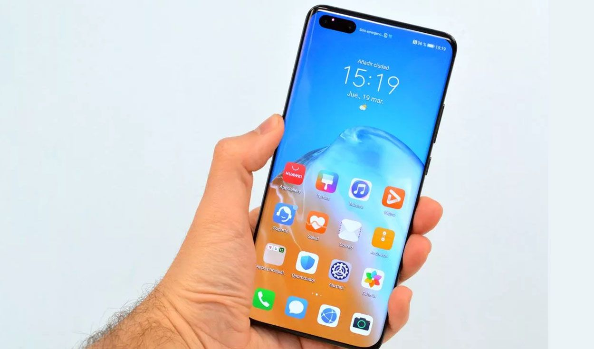

<div fxLayout="column" class="cont">

  <div fxLayout="row" fxLayoutAlign="center center" fxFlex="100%">

    <p class="p_1">
      You are ready to connect to your <br> favorite streaming apps!
    </p>

  </div>

  <div fxLayout="row" fxLayout.xs="column" fxLayout.sm="column" fxLayout.md="row" fxLayoutAlign="space-between none"
    class="container">

    <div class="div1_A" fxLayoutAlign="center center">
      <mat-card class="example-card" fxLayout="column">
        <mat-card-header>
          <mat-card-subtitle fxLayoutAlign="center center" class="subtitle">1. open your favorite app and select the
            content you want to</mat-card-subtitle>
        </mat-card-header>
        
      </mat-card>
    </div>

    <div class="div1_A" fxLayoutAlign="center center">
      <mat-card class="example-card" fxLayout="column">
        <mat-card-header>
          <mat-card-subtitle fxLayoutAlign="center center" class="subtitle">2. Press the Cast button on your device to
            share on TV</mat-card-subtitle>
        </mat-card-header>
        
      </mat-card>

    </div>

    <div class="div1_A" fxLayoutAlign="center center">
      <mat-card class="example-card" fxLayout="column">
        <mat-card-header>
          <mat-card-subtitle fxLayoutAlign="center center" class="subtitle">3. Select the cast device to which you want
            to share</mat-card-subtitle>
        </mat-card-header>
        
      </mat-card>
      <!-- <mat-icon color="primary" >padlock</mat-icon> -->
    </div>

  </div>

      <!-- <mat-icon color="primary" class="icon">padlock</mat-icon> -->

</div>